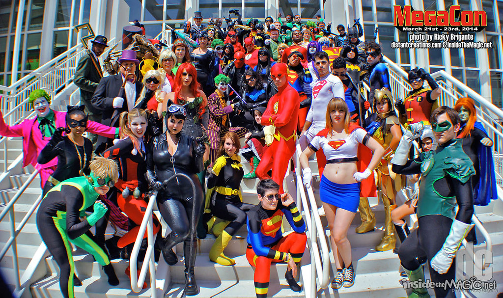
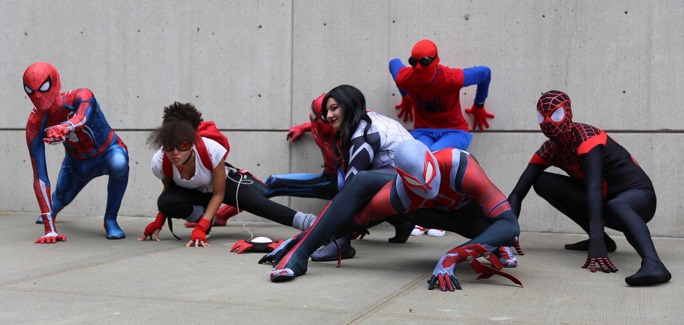

Ciudad de heroes 2022

El evento esta dirigido tanto a los fans como a las personas interesadas en los Heroes de DC y Marvel,se puede asistir con su propio cosplay.
Información importante del evento
- Lugar:Mall San Pedro
- Entradas.Por definir
- Fecha: Del 9 a 11 de Setiembre del 2022
- Hora: de 12 del medio día hasta las 5 de tarde
- Número de los colaboradores:7076 8055
MEGACON 2022
El evento esta dirigido a todos aquellos que adoren el mundo del entrenimiento ,el evento tendras varias ventas puede ir desde artículos Disney hasta articulos de Anime,Marvel y otras empresas del entrenimiento.
- Lugar:Museo de los niños
- Entradas:por definir
- Fecha: Por definir este año
- Hora: de 9 de la mañana a 5 de la tarde que cierra el museo
Spider-verse 2022
Evento para todos los conocedores y admirados del hombre araña
- Lugar:Plaza de la cultura
- Entradas:por definir
- Fecha: Por definir este año
- Detalles: Se estará recolectando en alcancías identificadas para ayudar a la asociación de lucha contra el cancer infantil.